Note #1
Uge 5-6
Resultater
- Optimering af app engagement
- App-engagement kan føre til succes på tværs af forretningsmodeller:
- Øget fastholdelse
- Flere abonnementsopgraderinger
- Længere abonnementer
- Mere reklameindtægter
- Øget LTV (life value) og ARPU (Average Revenue Per User)
- Kundeværdi gennem Apps engagerer og skaber værdi på tværs af forskellige oplevelsessfærer:
- Berigende oplevelser
- Adfærdsændring
- Nøgle Faser for bruger engagement maksimering
- Erhvervelse (Acquisition)
- At erhverve nye brugere
- Brugere besøger listens side
- Bruger downloader appen
- Engagement
- Første gangs brugeroplevelse og aktivering
- Gentagen brug
- Fastholdelse over tid
- Churn
- Brugen stopper/inaktivitet
- Bruger afinstallerer
- Engagementens hierarki
- Niveau 1: Voksende Engagerede Brugere
- Fokusér på at få brugere til at fuldføre den primære handling. Den primære handling er ofte den handling, der er mest korreleret med fastholdelse, handlingen der udgør fundamentet for dit produkt.
- Niveau 2: Fastholdelse af Brugere
- Dit produkt bør blive bedre, jo mere det bliver brugt. Brugere har mere at miste ved at forlade produktet.
- Niveau 3: Selv promovering
- Når brugere engagerer sig, skaber de positive gentagelser i produktet, som hjælper produktet med selv at opretholde sig.
- Overvejelser for at optimere app-engagement:
- Forstå deres behov og ambitioner
- Respektere deres tid, opmærksomhed og generelle trivsel
- Anerkende konteksten af deres liv og formidle den sande værdi af produktet
- I sidste ende handler det om at designe omkring menneskers liv for at skabe apps, der passer på lang sigt.
- Identificér den primære handling i appen:
- Hvem du ønsker at optimere for. Hvilken handling ønsker du, at brugerne skal foretage?
- Dette kan være en fuldført transaktion som booking af et hotelværelse, eller det kan være en social handling som at uploade et foto.
- Gennemsnitlig hyppighed af primære handlinger:
- Overvej den gennemsnitlige hyppighed af dine primære handlinger.
- For eksempel kan en indholdsorienteret app som en video-streamingtjeneste have en høj hyppighed af brug og en lang sessionlængde, hvorimod en transaktionsorienteret app som en auktionsapp sandsynligvis vil have en kortere hyppighed af brug og en kortere sessionlængde.
- Brugerens spektrum:
- Overvej dit spektrum af brugere.
- Sporer du, hvordan forskellige brugersegmenter engagerer sig med din app?
- Benytter du personer og andre værktøjer til at guide dine designbeslutninger?
- Sporer du engagementmønstrene hos betalende vs. ikke-betalende brugere?
- Måling af engagement:
- Der er mange måder at spore engagement på. Du kan undersøge forskellige centrale præstationsindikatorer (KPI'er) afhængigt af appens karakter.
- Centrale præstationsindikatorer:
- Daglige aktive brugere (DAU), Månedlige aktive brugere (MAU), nye brugere
- Samlet tid brugt i appen
- Sessioners længde eller interval
- Kvalitet:
- Det er vigtigt at gå dybere end overfladen og se på kvaliteten af engagementet også. Det hjælper dig med at forstå hvorfor bag adfærd og giver dig indsigt i, hvordan du kan forbedre din apps brug, brugervenlighed og til sidst, rentabilitet.
- Når det er muligt, følg op kvantitative analyser af dine målinger med kvalitative brugerinterviews for at forstå, hvorfor dine brugere opfører sig, som de gør.
- Tendenser:
- Analyse:
- Undersøg brug af analyseplatforme / SDK'er (Software Development Kit), der kan udtrække tilstrækkeligt granulære indsigter til at spore relevante KPI'er. Overvej at opbygge et produktanalyse- eller datalogihold, der vil udføre mere sofistikeret og granulær analyse af brugeradfærd.
- Firebase er en platform udviklet af Google, der tilbyder et bredt udvalg af værktøjer til at forstå og forbedre brugerengagement i din app.
- Bidragelse til app-engagement
- Første gangs bruger:
- Vækst af nye brugere:
- Brug i appen:
- Forstærk brugeroplevelsen ved at tillade social konkurrence, støtte in-app brugerfællesskaber og tilbyde belønninger eller låse flere funktioner op for at fastholde brugernes interesse.
- Optimering af sessionens hyppighed:
- Tilføj udløsere for at minde eller opfordre brugeren til at engagere sig i appen. Gør notifikationer personlige, relevante, handlingsrettede og rettidige. Lad brugerne have kontrol over, hvilke notifikationer de ønsker at modtage.
- Minimering af churn:
- Tag handlinger både i og uden for appen for at minimere churn. Forstærk værdien af appen indefra appen, men informer også tidligere brugere om nyt indhold og tilbud rabatter.
- Først installeres: Android Studio
- I dialogboksen Ny projekt skal du vælge Empty Activity og derefter klikke på Næste.
- I feltet Navn skal du indtaste "Happy Birthday" og derefter vælge en minimum API-niveau på 24 (Nougat) i feltet Minimum SDK og klikke på Udfør. 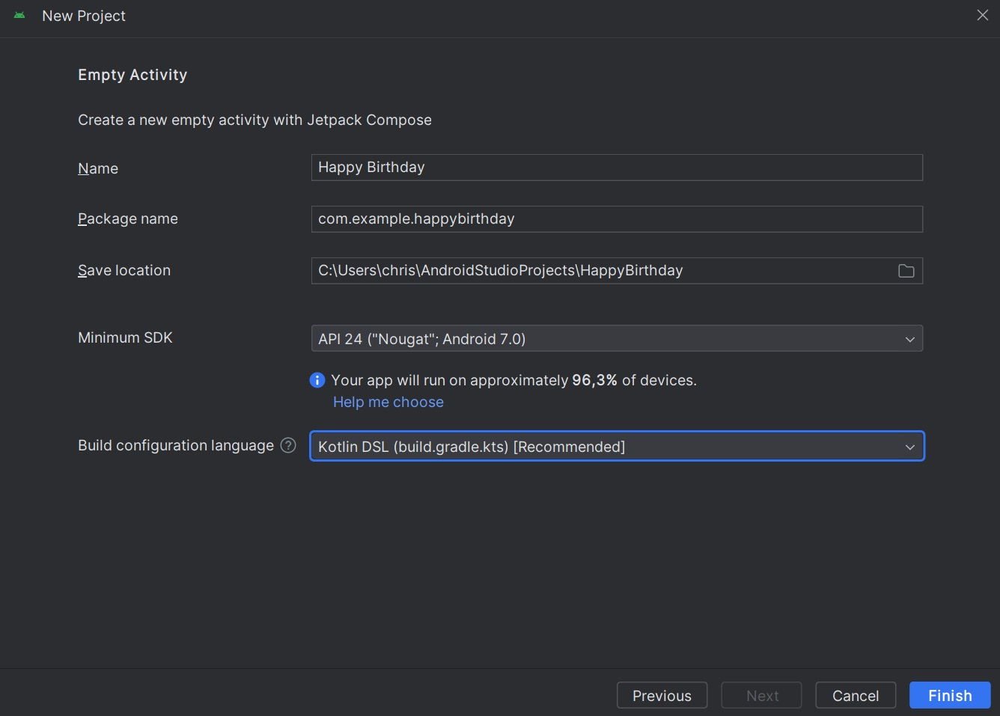
- Klik på "Run app".
- Når du har oprettet denne "Happy Birthday" app med skabelonen Tom aktivitet, opsætter Android Studio ressourcer til en grundlæggende Android-app, herunder en "Hello Android!" besked på skærmen. 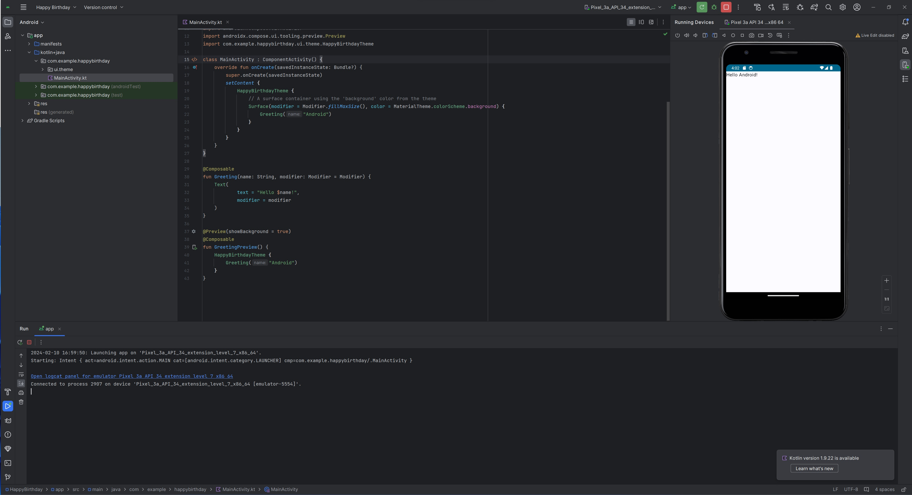
Bruger engagement
Spor og optimer engagement KPI'er, der afspejler din kerneengagementsmodel.
Opret en simple tekst app til android med tekstkomponenter
Kilder:
Note #2
Uge 7-8
Resultat
- I BirthdayCardPreview() funktionen, ændre "Android" argumentet i Greeting() funktionen til dit navn.
- Forhåndsvisningen bliver automatisk opdateres.
message: En strengparameter, som indeholder den tekst, der skal vises.modifier(valgfri): En Modifier-parameter, som kan bruges til at tilpasse udseendet eller layoutet af teksten.- Emnerne om Column, Row og Box kompositioner, der kan fungere som forældre UI-elementer bliver udforsket her.
- Jeg har udviklet en lommeregner i kotlin med nat/lys funktion
- Jeg har kunne bruge viden jeg fik gennem tidligere kurser for at kunne oprette et layout.
- Jeg vil gerne udvikle en app, der giver positive bemærkninger for at hjælpe med motivation og selvværd.
- Mit Github med appen.
- (Kotlin 2020) How to create Random Topic Generator in Android Studio
- Koden var lidt outdated, men var brugfor for at starte udviklingen af min app.
Android Studio giver dig mulighed for at få vist en forhåndsvisning af dine komponérbar funktioner direkte i IDE'en. Du kan få vist, hvordan din app ser ud i Designpanelet i Android Studio.
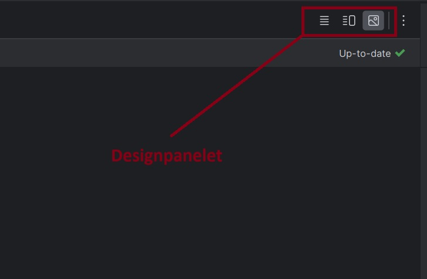For at få vist en forhåndsvisning af en komponérbar funktion i Android Studio, skal funktionen angive standardværdier for alle dens parametre. Derfor anbefales det ikke at forhåndsvis Greeting() funktionen direkte. I stedet kan du oprette en anden funktion, f.eks. BirthdayCardPreview(), som kalder Greeting() med de nødvendige argumenter.
@Preview(showBackground = true)
@Composable
fun BirthdayCardPreview() {
HappyBirthdayTheme {
Greeting("Android")
}
}
For at se din forhåndsvisning:
@Preview(showBackground = true)
@Composable
fun BirthdayCardPreview() {
HappyBirthdayTheme {
Greeting("James")
}
}
Denne ændring definerer en komponérbar funktion kaldet GreetingText().
Funktionen tager to argumenter:
Inde i GreetingText() funktionen bruges Text komponenten til at vise teksten, hvor
message variablen anvendes som teksten, der skal vises.
Ændring af skriftstørrelse
Du har tilføjet tekst til din brugergrænseflade, men det ligner ikke den endelige app endnu. Lær hvordan du ændrer størrelsen, tekstfarven og andre attributter, der påvirker tekstelementets udseende. Du kan også eksperimentere med forskellige skriftstørrelser og farver.
Skalérbare pixels (SP)
Skriftstørrelsen i Android-apps måles i skalérbare pixels (SP). To forskellige måleenheder anvendes: density-independent pixels (DP) og skalérbare pixels (SP). SP tilpasser sig brugerens foretrukne tekststørrelse under telefonindstillingerne.
I MainActivity.kt-filen, rul ned til Text() kompositionen i GreetingText() funktionen. Tilføj et
fontSize argument til Text() funktionen og indstil det til en værdi af 100.sp.
Text(
text = message,
fontSize = 100.sp
)
Android Studio fremhæver .sp koden, fordi du skal importere nogle klasser eller egenskaber for at kunne kompilere din app.
Klik på .sp, som er markeret af Android Studio. Klik på Import i popup-vinduet for at importere
androidx.compose.ui.unit.sp til at bruge .sp udvidelsesegenskaben.
Rul til toppen af filen og bemærk importanvisningerne, hvor du skal se en
import androidx.compose.ui.unit.sp erklæring, hvilket betyder, at Android Studio
tilføjer pakken til din fil.
Bemærk den opdaterede forhåndsvisning af skriftstørrelsen. Årsagen til overlapningen af meddelelsen er, at du skal specificere linjehøjden.
Opdater Text kompositionen for at inkludere linjehøjden.
@Composable
fun GreetingText(message: String, modifier: Modifier = Modifier) {
Text(
text = message,
fontSize = 100.sp,
lineHeight = 116.sp,
)
}
Tilføj en anden tekst
I MainActivity.kt-filen, rul ned til GreetingText() funktionen.
Tilføj en parameter med navnet from af typen String til funktionen for din signatur.
fun GreetingText(message: String, from: String, modifier: Modifier = Modifier)
Bemærk: Rækkefølgen af funktionens parametre betyder ikke noget, hvis du bruger navngivne argumenter i funktionens kald.
Efter fødselsdagshilsen Tekst kompositionen, tilføj en anden Tekst komposition, der accepterer et
tekstargument sat til værdien af from.
@Composable
fun GreetingText(message: String, from: String, modifier: Modifier = Modifier) {
Text(
// ...
)
Text(
text = from,
fontSize = 36.sp
)
}
Rul til BirthdayCardPreview() funktionen.
Tilføj endnu en String parameter for at signere dit kort, f.eks. "From Emma".
GreetingText(message = "Happy Birthday Sam!", from ="From Emma")
Bemærk forhåndsvisningen.
En kompositions funktion kan beskrive flere UI-elementer. Hvis du dog ikke angiver, hvordan de skal arrangeres, kan Compose arrangere elementerne på en måde, du ikke kan lide. For eksempel genererer ovenstående kode to tekstelementer, der overlapper hinanden, fordi der ikke er nogen vejledning om, hvordan de to kompositioner skal arrangeres.
I din næste opgave vil du lære, hvordan du arrangerer kompositionerne i en række og en kolonne.
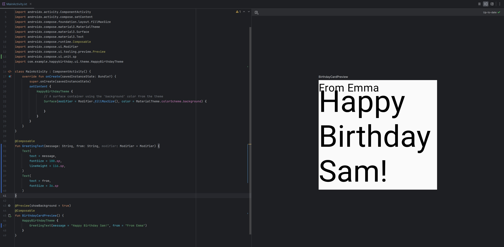Arranger tekstelementerne i en række og kolonne
UI-hierarkiet er baseret på indhold, hvilket betyder, at en komponent kan indeholde en eller flere komponenter, og termerne forælder og barn bruges nogle gange.
De tre grundlæggende, standard layout elementer i Compose er Column, Row og Box kompositioner. Du lærer mere om Box kompositionen i den næste kodekladde.
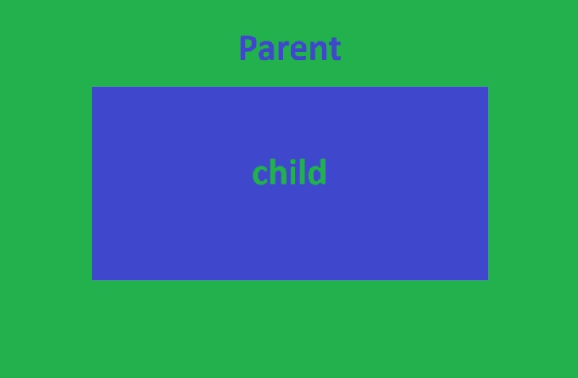 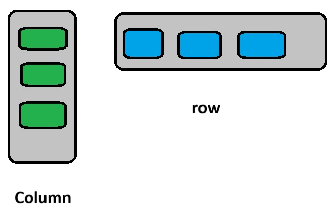Column, Row og Box er kompositionsfunktioner, der tager komposable indhold som argumenter, så du kan placere elementer inden i disse layout elementer. For eksempel placeres hvert børnelement inde i en Row komposition vandret ved siden af hinanden i en række.
Row {
Text("Første kolonne")
Text("Anden kolonne")
}
trailing lambda-syntaxen.
Anvend trailing lambda-syntaxen til at arrangere tekstelementerne i en række:
@Composable
fun GreetingText(message: String, from: String, modifier: Modifier = Modifier) {
Row {
Text(
text = message,
fontSize = 100.sp,
lineHeight = 116.sp,
)
Text(
text = from,
fontSize = 36.sp
)
}
}
Android Studio importerer automatisk Row-funktionen til dig. (Bemærk importen til androidx.compose.foundation.layout.Row)
Se den opdaterede forhåndsvisning i Design-panelet. Midlertidigt ændre skriftstørrelsen for fødselsdagshilsenen til 30.sp.
@Composable
fun GreetingText(message: String, from: String, modifier: Modifier = Modifier) {
Row {
Text(
text = message,
fontSize = 30.sp,
lineHeight = 116.sp,
)
Text(
text = from,
fontSize = 36.sp
)
}
}
Birthday hilsen og underskrift vises nu ved siden af hinanden i en række.
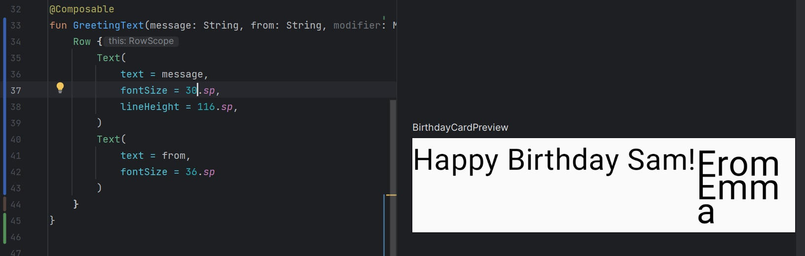For at arrangere tekstelementerne i en kolonne:
@Composable
fun GreetingText(message: String, from: String, modifier: Modifier = Modifier) {
Column {
Text(
text = message,
fontSize = 100.sp,
lineHeight = 116.sp
)
Text(
text = from,
fontSize = 36.sp
)
}
}
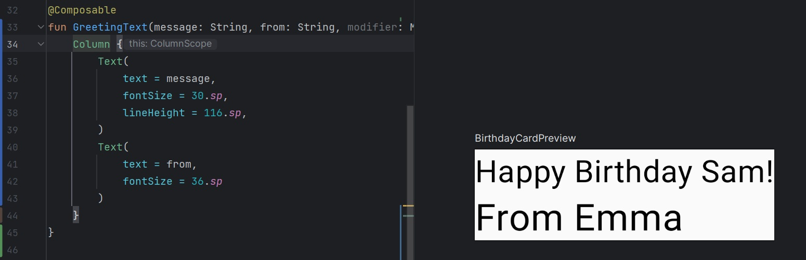
Auto-importerede pakke af Android Studio:
import androidx.compose.foundation.layout.Column
Husk at du skal videregive modifier-parameteren til det underordnede element i kompositionerne. Det betyder, at du skal videregive modifier-parameteren til Column kompositionen.
Tilføj hilsen til appen
I MainActivity.kt-filen, rul ned til onCreate() funktionen.
Kald GreetingText() funktionen fra Surface blokken.
Videregive GreetingText() funktionen din fødselsdagshilsen og signatur.
Den fuldførte onCreate() funktion bør se sådan ud:
class MainActivity : ComponentActivity() {
override fun onCreate(savedInstanceState: Bundle?) {
super.onCreate(savedInstanceState)
setContent {
HappyBirthdayTheme {
// En overfladebeholder, der bruger 'background' farven fra temaet
Surface(
modifier = Modifier.fillMaxSize(),
color = MaterialTheme.colorScheme.background
) {
GreetingText(message = "Tillykke med fødselsdagen Sam!", from = "Fra Emma")
}
}
}
}
}
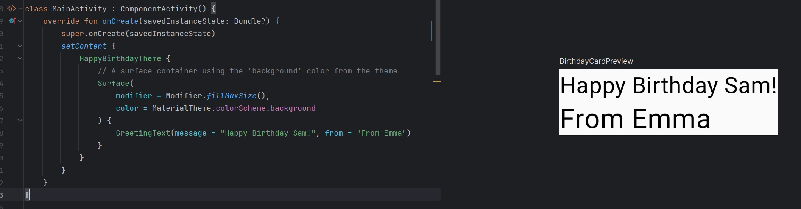
Justér hilsen til midten
For at justere hilsenen i midten af skærmen tilføj en parameter kaldet verticalArrangement og sæt den til Arrangement.Center. Du vil lære mere om verticalArrangement i en senere kodekladde.
@Composable
fun GreetingText(message: String, from: String, modifier: Modifier = Modifier) {
Column(
verticalArrangement = Arrangement.Center,
modifier = modifier
) {
// ...
}
}
Tilføj 8.dp polstring omkring kolonnen. Det er en god praksis at bruge polstringsværdier i intervaller af 4.dp.
@Composable
fun GreetingText(message: String, from: String, modifier: Modifier = Modifier) {
Column(
verticalArrangement = Arrangement.Center,
modifier = modifier.padding(8.dp)
) {
// ...
}
}
For at yderligere forbedre din app, juster hilsensteksten til midten ved hjælp af textAlign.
Text(
text = message,
fontSize = 100.sp,
lineHeight = 116.sp,
textAlign = TextAlign.Center
)
I det ovenstående skærmbillede er kun hilsenen centreret på grund af textAlign parameteren. Signaturen, "Fra Emma", har standardjusteringen, som er venstre.
Tilføj polstring til signaturen og juster den til højre.
Text(
text = from,
fontSize = 36.sp,
modifier = Modifier
.padding(16.dp)
.align(alignment = Alignment.End)
)
Adopter god praksis
Det er en god praksis at videregive modifier attributterne sammen med modifieren fra det overordnede kompositorium. Opdater modifier parameteren i GreetingText() som følger:
onCreate()
Surface(
//...
) {
GreetingText(
message = "Tillykke med fødselsdagen Sam!",
from = "Fra Emma",
modifier = Modifier.padding(8.dp)
)
}
@Composable
fun GreetingText(message: String, from: String, modifier: Modifier = Modifier) {
Column(
verticalArrangement = Arrangement.Center,
modifier = modifier
) {
// ...
}
}
Og programmet er færdig:
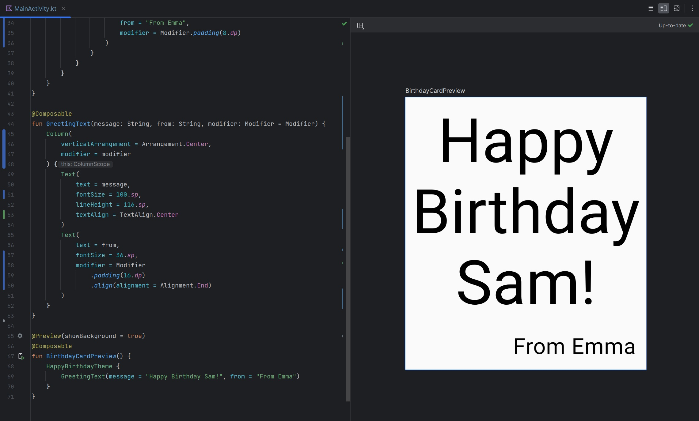Kilder:
Note #3
Uge 9-10
Resultat
Øvelse: Fødselsdags kort
Øvelse: Alignment
Øvelse: Component i Quadrant format

Øvelse: Brug af Composables
Øvelse: Visitkort
Øvelse: Terninge roll app
Øvelse: simpel lommeregner
Kilder:
Note #4
Uge 11-12
Resultat
Jeg har startet udviklingen med den viden jeg har erhvervet gennem kurserne i kotlin til at lave en barebone version af hvad PO ønsker:
Kilder:
Note #5
Uge 13-14
Resultat
Jeg har udviklet en barebone version af hvad PO ønsker udviklet i Kotlin.
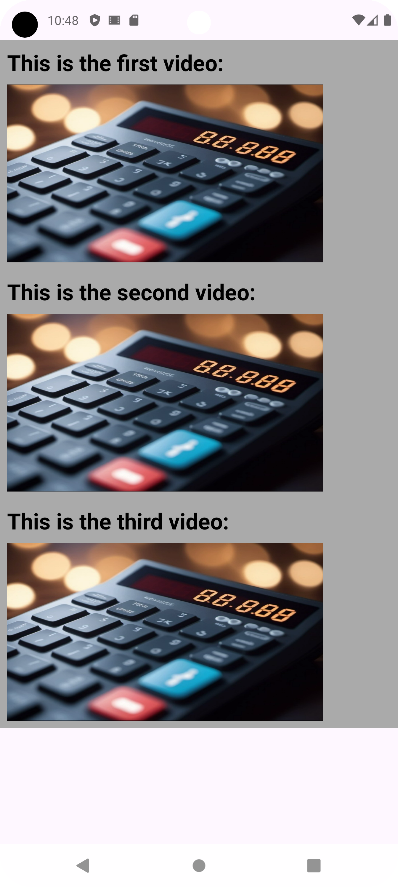Kilder:
Note #6
Uge 15-16
Forventning
Resultat
Kilder:
Note #7
Uge 17-18
Forventning
Resultat
Kilder:
Note #8
Uge 19-20
Forventning
Resultat
Jeg har udviklet en app i Kotlin som viser et citat, med en knap der tilfældigt fælger et nyt citat ved brug.
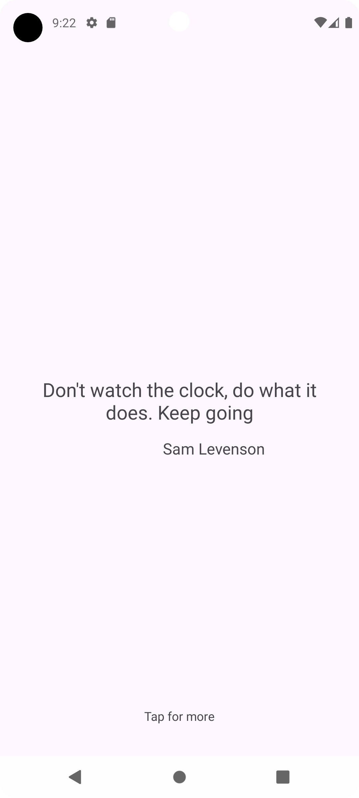Kilder:
Note #9
Uge 21-22